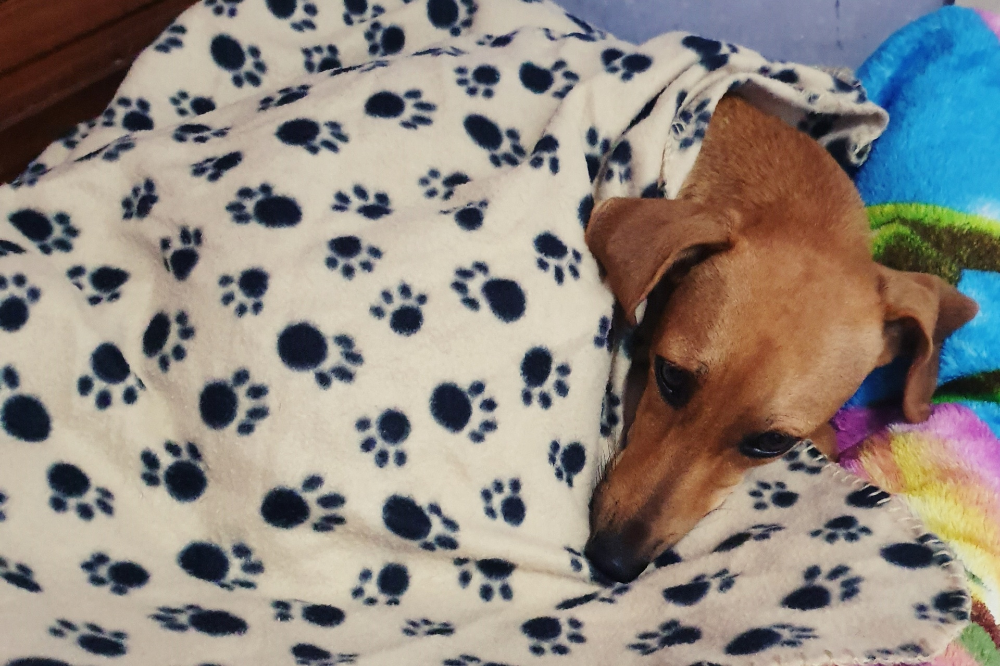
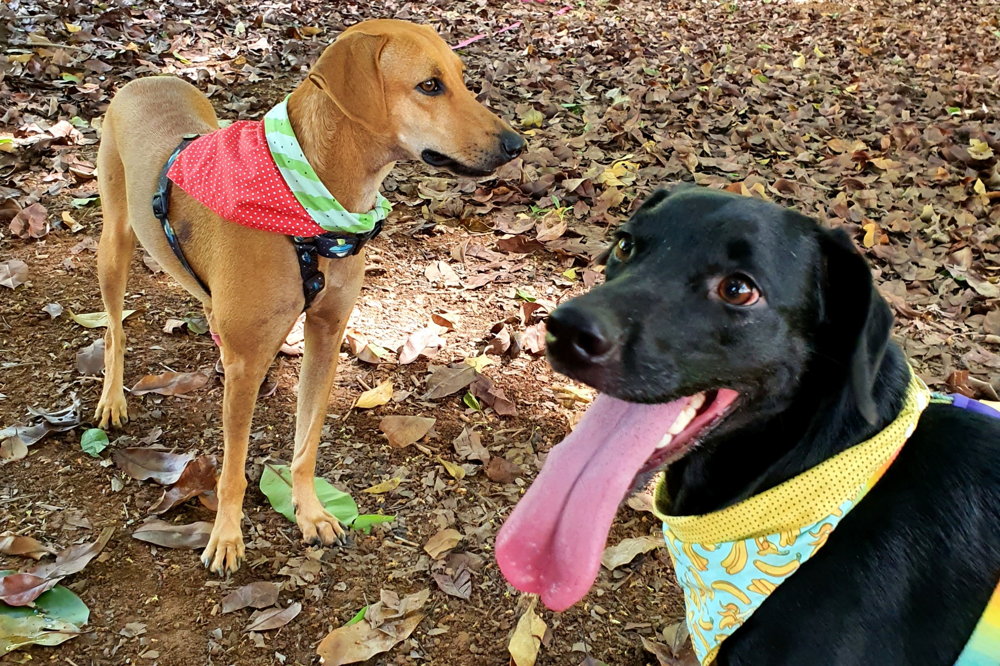
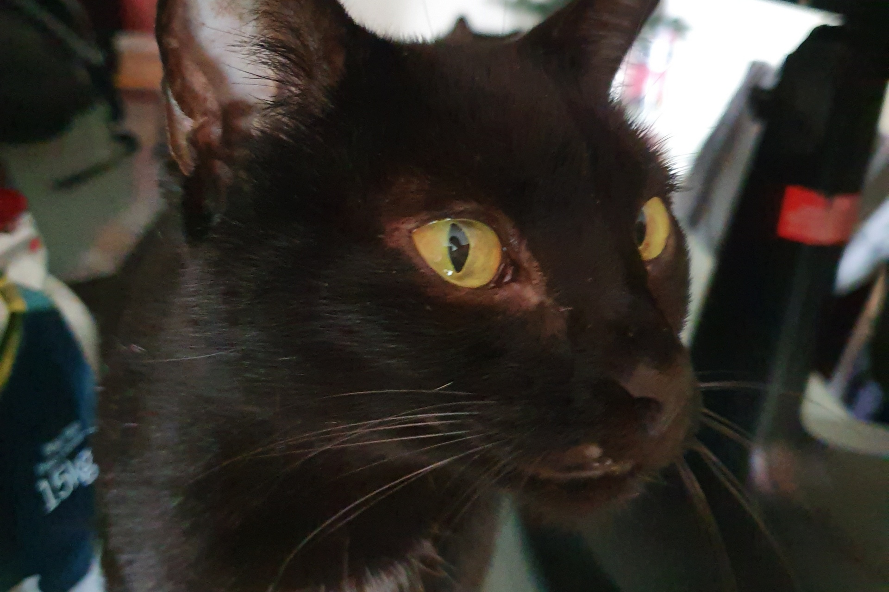

Por quê adotar?
Adotar um animal abandonado é um ato de amor e solidariedade. Antes de tomar essa decisão é importante avaliar se você e a sua família têm condições para assumir tamanha responsabilidade. Mas vamos ver aqui algumas vantagens que você pode ter ao adotar um cãozinho.

E não há recompensa maior do que vê-los se transformarem naquela coisinha alegre e saudável depois de receberem uma boa dose de cuidado e carinho.

Pensando bem, a pergunta é outra: se você pode mudar o destino de um animal carente, por que você não faria isso?

Ao adotar, você ajuda a reduzir o número de cães e gatos abandonados. Os animais de rua já passaram por muito sofrimento e tudo o que precisam é de um lar para serem felizes de verdade!